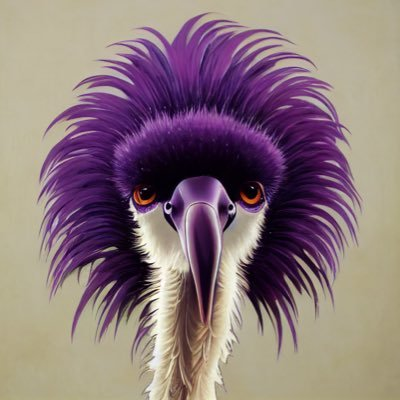

nostrver.se
Nostr by default - let's fix the web
CCNS
CCNS is a Nostr-focused community platform centered around link aggregation and discussion topics. Anyone with a Nostr account is able to post links and start discussions. Those are curated with zaps with a user defined number of sats.
Nuxstr
Nuxstr is a starter kit for building a Nostr client with the Nuxt Vue framework and Nostr Dev Kit (NDK).
Demo:
https://nuxstr.nostrver.se
nostr-php
Building and maintaining this Nostr agnostic helper library for fellow PHP developers.
Echostr
A concept for a micro app for managing your relay list to make sure you are "echoing" your relay list over the network with different event kinds.
Wrote the Dutch translation for
nostr.how PR
My Nostr related blogs:
Check out my
Nostr research & development business page
Other stuff I'm working on for Nostr: